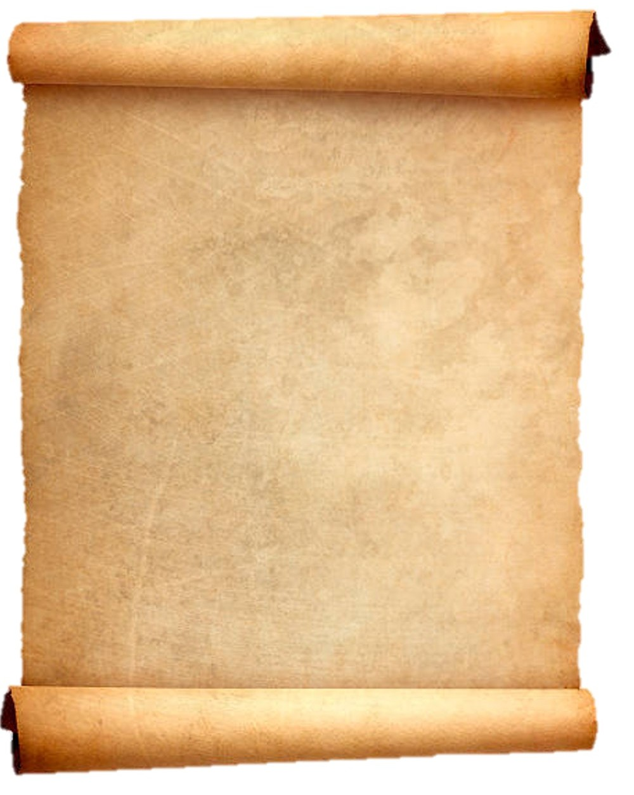

Was ist Flensburgia?
Hier sind Sie richtig, wenn Sie in eine Welt eintauchen wollen, in der Werte noch einen Wert haben.
Schlaraffia ist ein Spiel, das 1859 in Prag gegründet wurde.
Es vereint auf einmalige Art und Weise Freundschaft mit Humor und Kunst.
In jedem Fall ist Schlaraffia eine Persiflage auf das Leben.
Ein deutschsprachiger Männerbund, weder geheim, noch politisch oder berufsfördernd. Dafür weltoffen und fröhlich.
Also zeitgemäßer denn je. Lernen Sie uns kennen!

Statuten des
Kilianischen Windjammer-Ordens der Nordischen Reyche
(Kurzfassung)
In ehrerfülltem Gedenken an die hohe Kilia - unserer Mutter - führt die Flensburgia die Verleihung des Windjammer – Ordens fort.
Dieser wurde im Hornung a.U. 117 vom Fürsten Don Cabrio Infant vom Iglbau in der Seeburg gestiftet. Die Übernahme der Statuten begründet und verpflichtet die hohe Flensburgia zur Fortführung dieser Tradition. „Den Schlaraffen des Uhuversums geben die Begründer dieses Ordens bekannt:
Die allweisen Allschlaraffenräte haben die Gründung dieses Ordens freudvoll befürwortet, geht es doch um die Pflege der Freundschaft und allen Schlaraffen den Anreiz zu schaffen, die nordischen Reyche kennen zu lernen.
Für die Sassen der nordischen Sprengel, noch mehr Kontakt zu pflegen, um die Bedingungen des Kilianischen Windjammer-Ordens der Nordischen Reyche zu erfüllen, die da sind: Besuch folgender Reyche innerhalb einer Winterung:
Hammonia, Brema, Luebeca, Suerina, Oldenburgia, Flensburgia, Castellum Virsurgis, Waterkant, Ante Portas Mundi, Bi de hoge Brüch, Perla Sylta, Schlicktonnia, Auf der Heide, Castellum Budjentum, Im Sachsenwald, Am Elbgestade, Am Kap der guten Hoffnung, Varelia achtern Diek, Medina Mayurca.
Mindestens aber zehn der genannten Reyche, innerhalb einer Winterung. Jeder Sasse des Uhuversums, der diese Bedingung erfüllt hat, seine Angaben auf der Ausrittsliste durch den Kanzelar seines Reiches bestätigt wurden und dieses rechtzeitig, bis zum 30. des Erntemonds, der Flensburgia gegenüber kundgetan hat, kann sicher sein, zum nächsten Windjammerfest, das jeweils zu Beginn einer Winterung in der hohen Flensburgia, und nur daselbst, stattfindet, dort den Windjammer-Orden gar feierlich verliehen zu bekommen. Der Orden ist ein seemännisch kunstvoll geflochtenes Tauwerk von einer guten Handspangen Länge, welches geziert von Flensburgias-Urahnen mit dem Jahreszeichen.
Gleichzeitig mit dem Orden wird der Titul verliehen: Nordland-Reiter. Bei Wiederholungen wird das Jahrungszeichen verliehen Als besondere Auszeichnungen werden verliehen:
Für 15 Nordlandritte: der Titul „Hein Fofftein"
Für 20 Nordlandritte: der Titul: „King of the Royals"
Für 25 Nordlandritte: der Titul: „Käpt'n Fiefuntwintig"
Nachdem die Anwärter des Ordens die geringen Kosten (5 Rosenobel) berappt haben, steht einer feierlichen Verleihung nichts mehr im Wege. Danach kann der so Ausgezeichnete eine Fechsung über Seefahrt, Handel und Piraterie halten, oder zu einem fröhlichen Umtrunk zur Freude aller Anwesenden auf seine Kosten einladen.“ Es sei noch kundt getan, dass am Tage des Windjammerfestes die ausgezeichneten Recken auf Kosten des Reiches zu einer Tages-Atzung uhu herzlich eingeladen sind.
Flensburgia, am 1. im Lethemond a.U. 164 Genehmigt: Rt. Versinus Actuarius W&A Rt. Siam-ex e-Mail: siamex@email.de
In ehrerfülltem Gedenken an die hohe Kilia - unserer Mutter - führt die Flensburgia die Verleihung des Windjammer – Ordens fort.
Dieser wurde im Hornung a.U. 117 vom Fürsten Don Cabrio Infant vom Iglbau in der Seeburg gestiftet. Die Übernahme der Statuten begründet und verpflichtet die hohe Flensburgia zur Fortführung dieser Tradition. „Den Schlaraffen des Uhuversums geben die Begründer dieses Ordens bekannt:
Die allweisen Allschlaraffenräte haben die Gründung dieses Ordens freudvoll befürwortet, geht es doch um die Pflege der Freundschaft und allen Schlaraffen den Anreiz zu schaffen, die nordischen Reyche kennen zu lernen.
Für die Sassen der nordischen Sprengel, noch mehr Kontakt zu pflegen, um die Bedingungen des Kilianischen Windjammer-Ordens der Nordischen Reyche zu erfüllen, die da sind: Besuch folgender Reyche innerhalb einer Winterung:
Hammonia, Brema, Luebeca, Suerina, Oldenburgia, Flensburgia, Castellum Virsurgis, Waterkant, Ante Portas Mundi, Bi de hoge Brüch, Perla Sylta, Schlicktonnia, Auf der Heide, Castellum Budjentum, Im Sachsenwald, Am Elbgestade, Am Kap der guten Hoffnung, Varelia achtern Diek, Medina Mayurca.
Mindestens aber zehn der genannten Reyche, innerhalb einer Winterung. Jeder Sasse des Uhuversums, der diese Bedingung erfüllt hat, seine Angaben auf der Ausrittsliste durch den Kanzelar seines Reiches bestätigt wurden und dieses rechtzeitig, bis zum 30. des Erntemonds, der Flensburgia gegenüber kundgetan hat, kann sicher sein, zum nächsten Windjammerfest, das jeweils zu Beginn einer Winterung in der hohen Flensburgia, und nur daselbst, stattfindet, dort den Windjammer-Orden gar feierlich verliehen zu bekommen. Der Orden ist ein seemännisch kunstvoll geflochtenes Tauwerk von einer guten Handspangen Länge, welches geziert von Flensburgias-Urahnen mit dem Jahreszeichen.
Gleichzeitig mit dem Orden wird der Titul verliehen: Nordland-Reiter. Bei Wiederholungen wird das Jahrungszeichen verliehen Als besondere Auszeichnungen werden verliehen:
Für 15 Nordlandritte: der Titul „Hein Fofftein"
Für 20 Nordlandritte: der Titul: „King of the Royals"
Für 25 Nordlandritte: der Titul: „Käpt'n Fiefuntwintig"
Nachdem die Anwärter des Ordens die geringen Kosten (5 Rosenobel) berappt haben, steht einer feierlichen Verleihung nichts mehr im Wege. Danach kann der so Ausgezeichnete eine Fechsung über Seefahrt, Handel und Piraterie halten, oder zu einem fröhlichen Umtrunk zur Freude aller Anwesenden auf seine Kosten einladen.“ Es sei noch kundt getan, dass am Tage des Windjammerfestes die ausgezeichneten Recken auf Kosten des Reiches zu einer Tages-Atzung uhu herzlich eingeladen sind.
Flensburgia, am 1. im Lethemond a.U. 164 Genehmigt: Rt. Versinus Actuarius W&A Rt. Siam-ex e-Mail: siamex@email.de